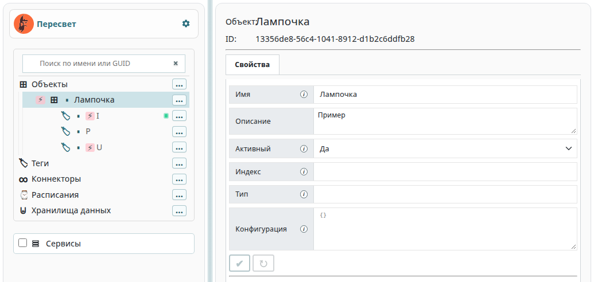
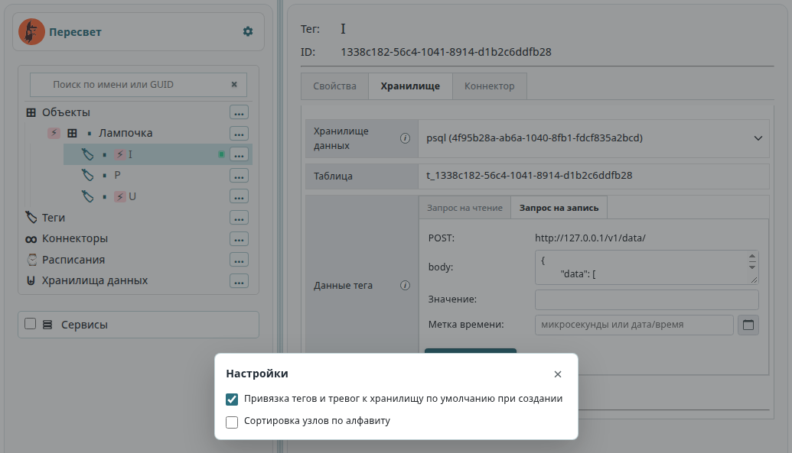
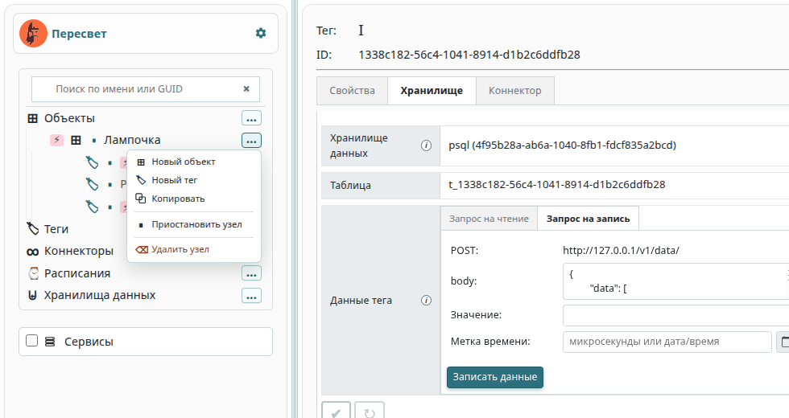
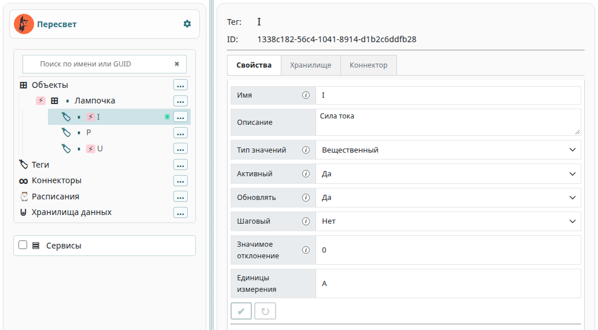
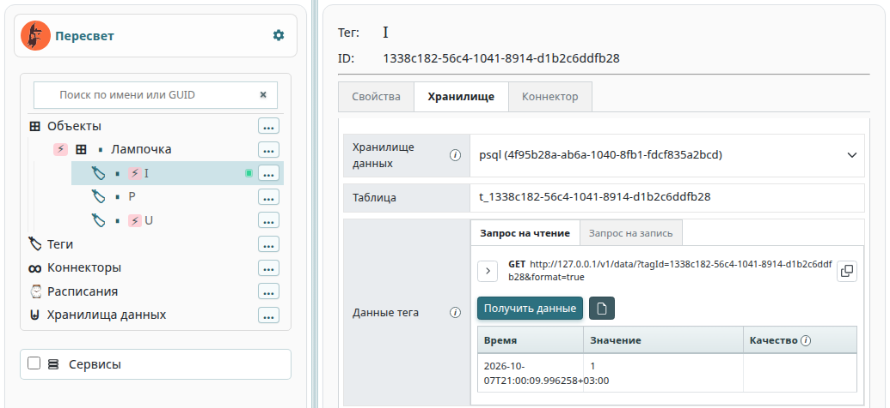
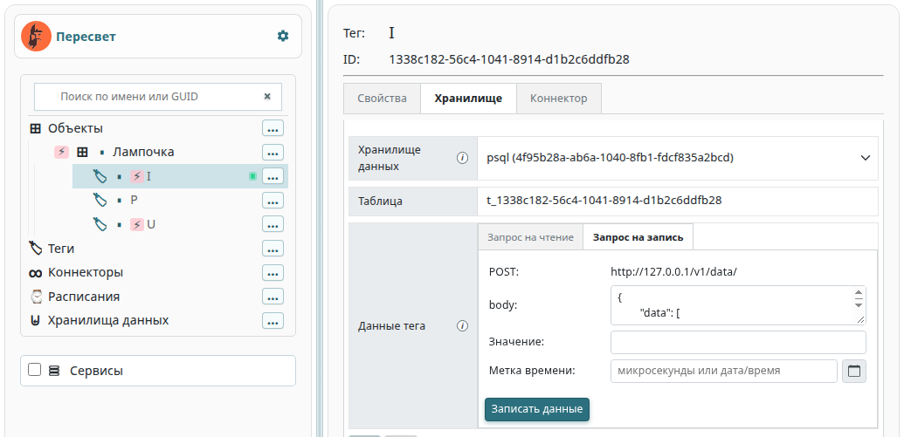

Конфигуратор модели
Конфигуратор — главная панель Grafana. В нём собирают иерархию платформы: объекты, теги, тревоги, методы, коннекторы, расписания и хранилища данных. Туда же выведены журналы сервисов.
Конфигуратор ходит в платформу через API. Форматы команд создания, чтения, обновления и удаления узлов описаны в документации API.
Как открыть
Запустите платформу (Установка и запуск) и откройте в браузере
http://localhost/grafana. Если платформа стоит на другом компьютере,
подставьте его адрес.
При первом входе имя и пароль — admin / admin.
Grafana предложит сменить пароль.

Слева дерево модели, справа свойства выбранного узла. Между колонками — разделитель: его можно перетащить. Такой же разделитель стоит между иерархией и блоком «Сервисы».
Пока узел не выбран, справа написано «Выберите узел в дереве слева».
Папки модели
На верхнем уровне лежат папки сущностей.
Объекты. Основная иерархия. Внутри объекта бывают другие объекты и теги. У тега — тревоги и методы.
Теги. Теги без привязки к объекту: линейный список параметров.
Коннекторы. Описания коннекторов. Состав полей зависит от коннектора. Камера — частный случай коннектора, см. Подключение видеокамер.
Расписания. Генераторы событий по времени.
Хранилища данных. Куда пишутся история тегов и события тревог. У одного хранилища может стоять признак «по умолчанию».
Сервисы. Журналы процессов платформы. Это не узлы модели.
Порядок внутри одного типа задаёт атрибут prsIndex.
Алфавитная сортировка включается в настройках и запоминается в браузере.
Поиск
Над деревом поле «Поиск по имени или GUID». Список показывает совпадения по имени и по идентификатору. Выбор строки раскрывает ветку и делает узел текущим.
Настройки
Шестерёнка стоит в одной строке с надписью «Пересвет», у правого края. Окно запоминает флажки в браузере.

Привязка тегов и тревог к хранилищу по умолчанию при создании. Если флажок включён, новый тег или новая тревога сразу привязываются к хранилищу с признаком «по умолчанию». Если флажок снят, узел создаётся без этой привязки. Тег типа «Видеопоток» к хранилищу истории не привязывается в любом случае.
Сортировка узлов по алфавиту.
Сначала узлы группируются по типу: объекты, затем теги, тревоги, методы,
коннекторы, расписания и хранилища. Пока флажок снят, внутри типа
сохраняется порядок платформы по prsIndex. Если флажок включён,
внутри типа узлы сортируются по имени. Настройка применяется и к уже
раскрытым веткам.
Меню команд узла
У строки дерева слева стоит кнопка «…» с подсказкой «Команды».
В меню только те пункты, которые допустимы для этого узла.
Escape и щелчок мимо меню его закрывают.

Узел |
Пункты меню |
|---|---|
Папка «Объекты» |
Новый объект |
Объект |
Новый объект, новый тег, копировать, приостановить, удалить |
Папка «Теги» |
Новый тег |
Тег |
Новая тревога, новый метод, копировать, приостановить, удалить |
Тревога |
Новый метод, копировать, приостановить, удалить |
Метод |
Копировать, приостановить, удалить |
Папка «Коннекторы» |
Новый коннектор |
Коннектор |
Приостановить, удалить |
Папка «Расписания» |
Новое расписание |
Расписание |
Приостановить, удалить |
Папка «Хранилища данных» |
Новое хранилище |
Хранилище |
Приостановить, удалить |
Новый узел создаётся с параметрами по умолчанию: имя совпадает с идентификатором, справа сразу открываются его свойства.
Копировать. Копия появляется рядом с исходным узлом, вместе с потомками. Если такое имя уже занято, платформа подбирает свободное. Для объекта конфигуратор сначала спрашивает имя копии.
Приостановить и Включить меняют признак «Активный» у выбранного узла и у потомков, которые уже раскрыты в дереве. Свёрнутая ветка, которую дерево ещё не загрузило, в этот обход не попадает. У приостановленного узла имя бледнее, а значок у строки подписан «Узел приостановлен».
Удалить убирает узел и всех его потомков.
Копирование, удаление и приостановка спрашивают подтверждение: окно с жёлтым треугольником, кнопки «Подтвердить» и «Отмена».
Перетаскивание
Объекты и теги можно переносить мышью. Папки верхнего уровня не перетаскиваются.
Узел отпускают на объект: он становится его потомком. Перенос внутрь самого себя или внутрь своего поддерева конфигуратор отклоняет.
Несколько узлов одного вида выделяют вместе.
Ctrl (на macOS Cmd) добавляет строку к выделению,
Shift выделяет диапазон среди соседей того же вида.
Перетаскивание любой выделенной строки переносит всю группу.
Обычный щелчок выделение снимает.
Пометки в дереве
Подсказка строки собирается из того, что конфигуратор уже знает об узле.
Знак паузы на родителе — в ветке есть приостановленный узел.
Знак «пусто» (∅) у тега или тревоги — нет привязки к хранилищу данных. Тот же знак на родителе значит, что такая привязка отсутствует где-то в ветке.
Молния у тега — нет ни коннектора, ни дочернего метода, откуда брались бы данные.
У хранилища с признаком «по умолчанию» стоит соответствующая пометка.
Кружок у коннектора — сессия MQTT. Зелёный: связь есть. Красный: сессии нет. Серый: статус ещё не получен. Конфигуратор спрашивает статус примерно раз в пять секунд. У камеры кружок зелёный, пока видеосервер держит сеанс RTSP.
Свойства узла
Справа — имя, идентификатор и поля, которые относятся к этому виду узла. Изменённое поле обводится бирюзовой рамкой.
Пока есть несохранённые правки, активны две кнопки под формой:
галочка Записать — отправить правки в платформу;
круговая стрелка Сбросить — вернуть значения, которые были при открытии узла.

Имя, описание и признак «Активный» есть почти у всех узлов. Остальной набор зависит от вида.
Объект. Индекс, код типа, конфигурация JSON.
Тег. Тип значений, «Обновлять», «Шаговый», значимое отклонение, единицы измерения и блок «Данные тега». Типы значений: целый, вещественный, строковый, json, интеграционный, видеопоток.
Тревога. Сравнение значения тега (>= или <), порог
и тип квитирования: вручную или автоматически.
Метод. Адрес, под которым метод зарегистрирован в системе,
код типа и блоки инициаторов и параметров.
Код 0 — вычислительный метод по инициаторам.
Код 1 — виртуальный: ответ GET /v1/data берётся из метода,
без чтения базы.
Коннектор. Конфигурация JSON, флажок «Лог в платформу», журнал и команды.
Расписание. Начало, конец и шаг: секунды, минуты, часы или дни.
Хранилище данных. Признак «по умолчанию», код типа и конфигурация JSON.
Поле «Активный» у одного узла при записи меняет только этот узел. Чтобы выключить раскрытую ветку целиком, пользуйтесь пунктом меню «Приостановить».
Тег: хранилище и коннектор
У тега и у тревоги справа появляется вкладка Хранилище. У тега есть ещё вкладка Коннектор.
Хранилище. Одно хранилище на тег. Смена отвязывает тег от предыдущего. На этой же вкладке лежит блок «Данные тега»: запрос на чтение, запись и экспорт. Тревога привязывается к хранилищу на этой вкладке и не имеет своего блока данных. Папка «Хранилища данных» в дереве показывает те же связи со стороны хранилища.
Коннектор. Одно подключение на тег. В поле конфигурации привязки
лежит JSON prsJsonConfigString узла связи тега с коннектором:
адреса регистра, топики и прочие параметры источника.
Кнопка записи сохраняет и свойства тега, и эту привязку.
Тег «Видеопоток» к хранилищу истории не привязывают. Вкладка Хранилище у него всё равно открывает просмотр. Связь — с коннектором-камерой. Подробности в Подключение видеокамер.
Данные тега
Блок «Данные тега» стоит на вкладке Хранилище. Он есть у обычного тега с выбранным хранилищем и у тега «Видеопоток» даже без привязки к истории.
Запрос на чтение
Вкладка показывает готовый GET и адрес. Кнопка рядом копирует запрос.
Ключи запроса совпадают с получением исторических данных:
format, actual, start, finish, count, value,
timeStep, maxCount. У start и finish есть календарь
и кнопка очистки. В строку можно вставить дату из таблицы ответа.

Получить данные выполняет запрос и заполняет таблицу «Время / Значение / Качество». Коды качества те же, что в Коды качества.
Для интеграционного тега на этой вкладке дополнительно задаётся params —
JSON фактических значений операции.
Запрос на запись
Вкладка Запрос на запись задаёт значение и, при необходимости, метку времени. Перед отправкой значение приводится к типу тега: целое, вещественное, строка или JSON. Пустая метка означает текущий момент. Заполненная метка — целое число микросекунд или строка даты и времени. Кнопка календаря подставляет дату строкой с часовым поясом.

Кнопка Записать данные отправляет POST /v1/data/.
У видеопотока этой вкладки нет: кадр в историю тегов не пишется.
Экспорт в CSV
После успешного Получить данные становится доступна кнопка
Сохранить в CSV. Успешным считается HTTP-ответ с кодом 2xx
и корректным JSON. Пустой список тоже можно экспортировать.
Ошибка HTTP или JSON, новый запрос и смена тега или любого параметра
очищают таблицу и блокируют экспорт до следующего успешного чтения.
Имя файла: <имя тега> :: <текущая метка времени>.csv.
Метка берётся в момент сохранения, в локальном часовом поясе.
Внутри файла сначала идут имя тега, его id и полная строка запроса
(GET и URL), затем ключи запроса и их значения.
После заголовка x,y,q записываются точки.
Если в запросе был ключ format, метки x попадают в файл
строками ISO 8601. Если ключ снят, x записывается целым числом
микросекунд, как в ответе платформы.
В файл попадают полный URL и ключи запроса как есть.
Если в адресе есть userinfo или среди параметров обнаружены
token, api_key, apikey, password, secret,
authorization, access_token, client_secret, x-api-key
или auth без учёта регистра, конфигуратор спрашивает подтверждение
перед скачиванием.
Коннектор: журнал и команды
Флажок Лог в платформу включает приём строк журнала коннектора.
Ниже две вкладки.
Лог коннектора. Хвост журнала. Пауза останавливает обновление на экране, запись на стороне платформы при этом продолжается. Кнопка со стрелкой вниз сохраняет видимый хвост в файл.
Команды коннектору. Строки уходят коннектору по одной команде на строку
(POST /v1/connectors_app/). Снизу видны ответ API и вывод,
который коннектор прислал обратно.
Камера в это меню команд shell не входит: поворот и параметры изображения задаются у тега видеопотока, см. Подключение видеокамер.
Метод
Инициаторы — две вкладки, «Теги» и «Расписания». Поиск находит узел по имени, пути или id и добавляет его в список. Событие тега или срабатывание расписания запускает метод.
Параметры передаются в расчёт. У каждого параметра есть имя, описание для оператора, источник и индекс.
Источник «Данные тега» собирает GET /v1/data: в запрос добавляют теги,
при необходимости применяют JSONata к ответу. Кнопка Пробный запрос
показывает, что вернёт платформа.
Источник «Данные из запроса клиента» берёт объект запроса, который пришёл на чтение родительского тега. К нему тоже можно применить JSONata. Пробный HTTP в этом режиме конфигуратор не выполняет.
Тревога и расписание
Тревога живёт под тегом. В конфигурации задают сравнение с порогом и квитирование. Факт появления, пропадания и квитирования пишется в хранилище, к которому тревога привязана.
Расписание задаёт окно времени и шаг. Метод может подписаться на расписание так же, как на тег.
Порядок работы с этими узлами разобран в примерах.
Хранилища данных
Папка «Хранилища данных» открывает справа карточки хранилищ. У выбранного хранилища в дереве видны привязанные теги.
У привязки к интеграционному хранилищу задают операции чтения и записи: имя, описание и выражения параметров. Запись операций уходит отдельно, кнопкой Записать операции (v2). Подробности контракта — в разделе Интеграционные хранилища и операции (API v2).
Сервисы
Папка «Сервисы» — журналы платформы, а не узлы модели. У каждой строки флажок «Показывать лог сервиса» и число consumer-ов. Справа общий хвост отмеченных сервисов.
Пауза останавливает обновление на экране. Корзина очищает журнал выбранных сервисов. Стрелка вниз сохраняет видимый текст в файл.
Примеры
Короткий сценарий с объектом, тегом и методом — в примерах. Подключение камеры — в Подключение видеокамер.